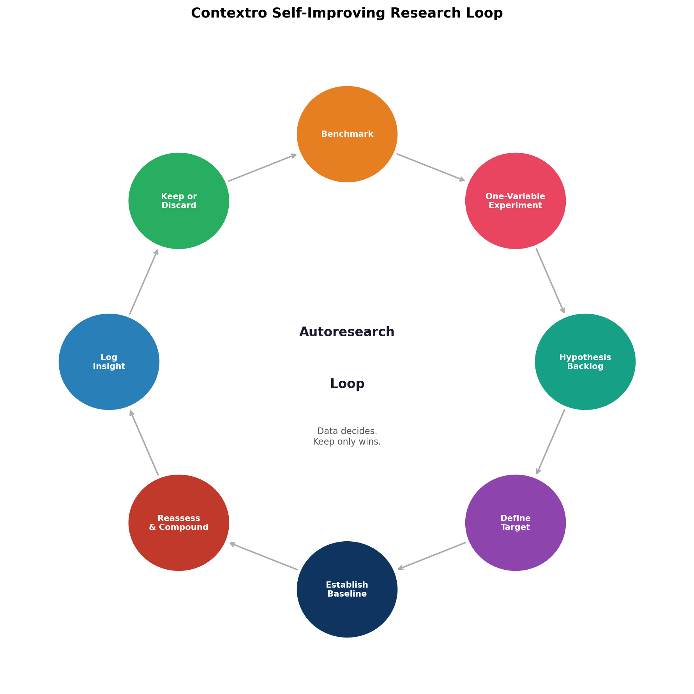

1. Introduction
Code discovery is expensive in MCP-driven coding workflows. Before a client can act on the right symbol or file, it typically runs broad searches, reads several files, and accumulates large amounts of context. In the fresh rerun used for this revision, a representative grep-based pipeline workflow consumed 5,524 tokens and took 1.11 s, while the corresponding indexed find_symbol call returned in 5.66 ms with 65 tokens.
Contextro addresses this problem by replacing file-by-file exploration with structured code intelligence. It is a local MCP server that indexes a repository once and then exposes tools for semantic retrieval, symbol navigation, graph traversal, impact analysis, structural search, git history search, and memory. The system is local-first: no cloud service is required, no API key is needed, and the repository stays on the machine where the work is done.
This manuscript makes three claims. First, a local code-intelligence layer can reduce the cost of discovery by a large margin. Second, a single-process architecture can provide that capability with low latency on a production repository. Third, benchmark-driven iteration matters: the source report shows that the system improved only when changes were measured, kept, and rechecked under the same evaluation setup.
3. System Design
Contextro runs as one local process. It sits between the MCP client and the repository and answers discovery questions directly. Instead of asking the client to read files until it finds the right symbol or path, the system returns structured results with names, locations, relationships, and compact snippets.

3.1. System Components
| Capability | Representative tools | Returned information |
|---|---|---|
| Search by meaning | search | Exact snippet, file, and line |
| Find a symbol | find_symbol | Definition location and caller count |
| Trace relationships | find_callers, find_callees, explain | Callers, callees, and local context |
| Assess blast radius | impact | Transitive impact set |
| Search structure | code(pattern_search, ...) | AST-level matches |
| Analyze reachability | dead_code, circular_dependencies | Structural analysis results |
| Search history | commit_search | Semantically relevant commits |
| Persist context | remember, recall | Durable memory across sessions |
3.2. Retrieval and Response Design
The system combines three retrieval signals. Vector search helps with meaning. BM25 helps with exact names and strings. The graph helps with structural questions such as callers, callees, and impact. Results are fused, filtered, and shortened before they are returned to the client. The source report also attributes part of the token savings to AST-aware snippet compression and progressive disclosure, where large results are previewed first and expanded only when needed.
The implementation choices are practical rather than exotic. LanceDB stores vectors, rustworkx holds the in-memory graph, tree-sitter and ast-grep provide syntax structure, and a Rust extension handles file discovery, hashing, and incremental checks. The chosen embedding model, potion-code-16m, was retained because the source report found that it balanced speed and quality well enough for interactive indexing.
4. Methodology
The evaluation uses a paired two-pipeline design, but the revision distinguishes two analysis sets instead of collapsing them into one headline number. Every task is run in a grep-based pipeline condition and a Contextro pipeline condition on the same repository. The full inventory contains 60 tasks across 16 categories. Of those, 39 tasks have a direct grep-plus-read analogue and therefore support a strict paired comparison; the remaining 21 tasks are MCP-native capabilities such as overview, dead_code, session tools, and memory tools.

4.1. Study Design
The grep-based pipeline is implemented in scripts/experiment_platform.py as grep -rl over *.ts, *.tsx, *.js, and *.mjs, excluding node_modules, .git, _generated, and .next. For each comparable task, the grep-based pipeline condition reads up to five matching files and counts both grep output and file contents toward the token estimate. The Contextro pipeline indexes the repository once, then executes exactly one MCP tool call per task against the indexed state using an isolated CTX_STORAGE_DIR and CTX_EMBEDDING_MODEL=potion-code-16m.
The paired-study harness now accepts explicit --codebase, --output-dir, and --storage-dir arguments so that the archived task suite can be rerun without editing the script. Tasks whose grep-based pipeline has no meaningful analogue are marked no_equivalent in the grep-based pipeline results rather than being forced into an artificial baseline. Those rows are preserved in the full inventory because they document net-new capability, but they are excluded from the directly comparable subset and from the 100-subset robustness analysis.
4.2. Repository Under Test
| Property | Value |
|---|---|
| Repository | Private production TypeScript monorepo |
| Indexed files | 8,496 files in the private production monorepo |
| Languages | TypeScript and JavaScript |
| Task inventory | 60 tasks across 16 categories |
| Directly comparable subset | 39 tasks across 8 categories |
| MCP-native tasks | 21 tasks whose control rows are marked no_equivalent |
| Fresh full-index rerun | 21.1 s with potion-code-16m |
| Verification host | Apple M4, 16 GB RAM, macOS 26.4.1, Python 3.12.13 |
4.3. Metrics and Reporting
| Measurement | Definition | Artifact |
|---|---|---|
| Token estimate | tiktoken with cl100k_base; grep-based pipeline adds grep output plus contents of up to five files serialized under the same tokenizer | src/contextro_mcp/token_counting.py, scripts/benchmark_utils.py, scripts/experiment_platform.py |
| Latency | Wall-clock milliseconds measured around each task invocation | summary.json, paired-study-rerun-summary.json |
| Tool calls and files read | Count of grep/read steps in grep-based pipeline versus one MCP call in Contextro pipeline | summary.json, paired-study-rerun-summary.json |
| Comparable subset | All tasks whose grep-based pipeline row is not no_equivalent | docs/publication/paired-study-subset-robustness.json |
| Robustness analysis | 100 bootstrap task subsets, sample size 39, sampling with replacement, seed 20260509 | scripts/task_subset_robustness.py |
| Open benchmark verification | 16-call token workflow plus 20 docstring-derived retrieval queries on the public src/ tree | docs/publication/open-token-benchmark.json, docs/publication/open-retrieval-quality.json |
The study is deterministic rather than stochastic in the usual machine-learning sense, so the revision emphasizes medians, ranges, and subset robustness rather than p-values. The 100-subset analysis is used as a sensitivity check on task mix, not as a claim about sampling from a broader population of repositories.
5. Results
5.1. Headline Outcomes
A fresh rerun of the original 60-task protocol reproduced the launch-era effect size closely while making the artifact trail explicit. Across the full 60-task inventory, total token consumption fell from 328,272 to 14,407 (grep-based pipeline vs. Contextro pipeline), mean tokens per task fell from 5,471.2 to 240.1, median latency fell from 448.35 ms to 5.21 ms, and mean files read fell from 2.5 per task to 0. The grep-based baseline models file-centric discovery (grep + up to five file reads); it is not a full autonomous agent policy. These results measure discovery cost, not end-to-end correctness.
The stricter comparison is the 39-task subset with genuine grep-based pipeline equivalents. On that subset, the Contextro pipeline reduced tokens to 6,638, a 98.0% reduction, while median latency fell from 498.89 ms to 4.89 ms and mean tool calls fell from 4.9 to 1.0. The difference between the 60-task and 39-task summaries is not noise: the remaining 21 tasks are MCP-native capabilities that add 7,769 output tokens because they expose analyses the grep-based pipeline cannot perform at all.

| Analysis set | Tasks | MCP-native tasks | Grep-based tokens | Contextro tokens | Token result | Median latency |
|---|---|---|---|---|---|---|
| Full task inventory | 60 | 21 | 328,272 | 14,407 | 95.6% reduction | 448.35 ms → 5.21 ms |
| Directly comparable subset | 39 | 0 | 328,272 | 6,638 | 98.0% reduction | 498.89 ms → 4.89 ms |
| 100 bootstrap subsets | 100 × 39 | 0 | - | - | median 97.87% 97.24%-98.48% | control 458.28-525.76 ms MCP 2.15-7.00 ms |
No bootstrap subset fell below 97.24% token reduction. That matters because it shows the effect is not being carried by one or two favorable tasks; the gain persists across many task mixtures drawn from the comparable subset.
5.2. Results by Category
Table 5 restricts category reporting to the eight categories with genuine grep-based pipeline equivalents. Semantic search and symbol discovery remain the strongest categories at 98.8% token reduction. Caller tracing, impact analysis, code understanding, git history search, and the comparable slice of the code tool remain above 96% as well.
Two categories show important tail behavior. The focus category is bimodal because one request returns in 4.81 ms while another deep file-context request takes 7.01 s. The comparable code category also contains a heavy outlier: repository-wide pattern_search takes 11.22 s even though the other comparable code tasks remain near-instantaneous.

| Category | Comparable tasks | Grep-based tokens | Contextro tokens | Reduction | Contextro latency |
|---|---|---|---|---|---|
| Semantic search | 8 | 96,366 | 1,199 | 98.8% | 131.53 ms median 95.19-138.31 ms |
| Symbol discovery | 8 | 34,481 | 413 | 98.8% | 1.81 ms median 1.37-9.13 ms |
| Caller/callee tracing | 6 | 25,915 | 730 | 97.2% | 1.46 ms median 0.92-4.89 ms |
| Impact analysis | 4 | 16,225 | 377 | 97.7% | 0.93 ms median 0.90-3.68 ms |
| Code understanding | 6 | 23,526 | 944 | 96.0% | 6.68 ms median 6.22-8.26 ms |
| Git history search | 2 | 46,106 | 1,117 | 97.6% | 6.51 ms median 5.21-7.80 ms |
| Code tool (comparable slice) | 3 | 51,459 | 1,318 | 97.4% | 1.92 ms median 0.97-11,222.49 ms |
| Focus / file context | 2 | 34,194 | 540 | 98.4% | 3,507.21 ms median 4.81-7,009.60 ms |
5.3. Tool Latency
Most lookup and graph operations remain in the low-millisecond range. The long tail is composed of deliberately heavier analyses and a small number of outliers rather than broad slowness. In the fresh rerun, focus_01 took 7.01 s and repository-wide code(pattern_search, ...) took 11.22 s; both are preserved explicitly in Appendix C instead of being hidden by category means.
| Tool | Fresh rerun latency | Role |
|---|---|---|
health | 0.88 ms | Server status |
status | 1.47 ms | Server status |
find_callers | 1.97 ms median | Graph lookup |
find_symbol | 1.81 ms median | Symbol lookup |
impact | 0.93 ms median | Blast radius analysis |
explain | 6.68 ms median | Local understanding |
commit_search | 6.51 ms median | History search |
overview | 93.24 ms | Project summary |
search | 131.53 ms median | Hybrid retrieval |
architecture | 436.75 ms | Deep structural summary |
dead_code | 1,307.18 ms | Reachability analysis |
code(pattern_search, ...) | 11,222.49 ms | Repository-wide AST search outlier |
5.4. Iterative Optimization
The optimization story is now supported by two explicit artifact families. Historical tuning logs in scripts/results.tsv and scripts/results_indexing_speed.tsv explain how the system arrived at its current response shaping and indexing strategy. Fresh benchmark reruns on the public src/ tree verify that the current revision still exhibits low token output and strong retrieval quality.

| Artifact | Measurement | Result | Source |
|---|---|---|---|
| Historical autoresearch log | 16-call workflow token budget | 2,552 → 1,043 total output tokens (-59.1%) | scripts/results.tsv |
| Historical indexing-speed log | Full index and no-change incremental reindex | 279 s → 6.8 s full index; 22 ms no-change incremental | scripts/results_indexing_speed.tsv |
| Fresh open token rerun | 16-call public workflow benchmark | 1,286 total output tokens; 16 calls; 7.5% token reduction | docs/publication/open-token-benchmark.json |
| Fresh open retrieval rerun | 20 docstring-derived queries on src/ | Hybrid MRR 1.0, Recall@1 1.0, Recall@5 1.0, 169.2 avg tokens | docs/publication/open-retrieval-quality.json |
6. Discussion
The main result is strongest when the evaluation is made stricter rather than looser. The full 60-task inventory shows a 95.6% token reduction, but the directly comparable 39-task subset shows a larger 98.0% reduction because it removes MCP-native tasks that have no grep-based pipeline analogue. That distinction matters for peer review: the paper can now separate replacement of file-centric discovery from addition of entirely new analysis surfaces.
The 100-subset robustness analysis strengthens the claim further. Across 100 deterministic task subsets, the token reduction never dropped below 97.24%, and the median reduction remained 97.87%. This does not prove universal generalization across all repositories, but it does show that the result is not dependent on one cherry-picked ordering or one narrow task mixture.
The latency profile tells a similarly nuanced story. Most lookups are effectively instantaneous, but a few repository-wide analyses still form a long tail. The right interpretation is not that Contextro is always sub-10 ms; it is that the common discovery operations are sub-10 ms while deeper structural queries remain expensive but still return structured answers that would otherwise require large file reads.
7. Limitations
The revision keeps the limitations section explicit because the new artifact package makes it possible to state them more precisely.
| Area | Issue | Status |
|---|---|---|
| Paired-study codebase availability | The original 8,496-file monorepo is private and cannot be redistributed with the paper | Mitigated by shipping the harness, sanitized task inventory, rerun summary, and public benchmark reruns |
| Control baseline approximation | The grep-based pipeline models naive discovery with grep plus up to five file reads, not a full autonomous agent policy | Interpret as a discovery-cost baseline rather than a universal baseline for agent quality; end-to-end correctness benchmark is future work |
| Tail latency | focus_01 and repository-wide pattern_search dominate the latency tail at 7.01 s and 11.22 s | Reported explicitly in Appendix C and excluded from any misleading latency simplification |
| Public proxy repository | The paired study corpus is a private monorepo; the public benchmark reruns use only the 78-file src/ tree | A public proxy repository (≥1,000 files) for full rerun reproducibility is planned as future work |
| End-to-end correctness | The study measures discovery cost (tokens, latency, file reads), not downstream coding correctness | An end-to-end edit-task correctness benchmark is future work |
| Next.js App Router reachability | dead_code flags live routes as unreachable | Known limitation |
| Duplicate symbol disambiguation | Multiple definitions with the same name can conflate callees | Under investigation |
| Complexity metrics | maintainability_index reports 0 for TypeScript | Not yet implemented for TS |
The scope of the study also matters. The paired study evaluates one production TypeScript monorepo and focuses on discovery efficiency, latency, and file-read behavior. It does not report a separate end-to-end correctness benchmark for code changes, nor does it compare against stronger baselines such as LSP-backed discovery or AST-aware grep. The results therefore support claims about discovery performance and interface quality, not broad claims about downstream coding correctness in every setting.
8. Availability and Reproducibility
This revision ships a paper-specific artifact package that distinguishes what is publicly rerunnable from what is only conditionally rerunnable because the study corpus is private. The package includes sanitized machine-readable JSON catalogs for the full 60-task inventory and the 39-task directly comparable subset. Contextro is a proprietary product of Distillation Labs and is not distributed as open-source software. The artifact package ships the evaluation harness and sanitized task catalogs; the Contextro server itself requires a commercial license.
8.1. Artifact Package
scripts/experiment_platform.py- paired-study harness with parameterized codebase and output pathsscripts/task_subset_robustness.py- deterministic 100-subset robustness analysisdocs/publication/paired-study-tasks.json- sanitized machine-readable full 60-task paired-study inventorydocs/publication/paired-study-comparable-tasks.json- sanitized machine-readable 39-task comparable subsetscripts/experiment_results/summary.json- archived launch-era paired-study aggregate summarydocs/publication/paired-study-rerun-summary.jsonandpaired-study-rerun-config.json- fresh rerun aggregate artifacts used in the main textdocs/publication/paired-study-subset-robustness.json- 100 deterministic bootstrap task subsetsdocs/publication/open-token-benchmark.json- fresh public token-efficiency rerundocs/publication/open-retrieval-quality.json- fresh public retrieval-quality rerunscripts/results.tsvandscripts/results_indexing_speed.tsv- historical optimization logs
8.2. Rerunnable Commands (Public Benchmarks)
pip install -e .[dev] python scripts/benchmark_token_efficiency.py python scripts/benchmark_retrieval_quality.py --path src --query-limit 20 --output docs/publication/open-retrieval-quality.json ruff check . pytest -v -m "not slow"
8.3. Conditional Paired-Study Rerun
The full 60-task paired study requires access to the original private monorepo or an adapted equivalent repository. The published task catalogs are sanitized public inventories that preserve task counts, categories, and tool coverage without disclosing private repository identifiers. When the target repository is available locally, the rerun protocol is:
python scripts/experiment_platform.py --output-dir docs/publication --export-task-catalogs-only python scripts/experiment_platform.py --codebase /path/to/private-monorepo --output-dir /secure/local-output python scripts/task_subset_robustness.py --results /secure/local-output/results.json --subsets 100 --output docs/publication/paired-study-subset-robustness.json
8.4. Verification Environment
The fresh reruns cited in this revision were executed on Apple silicon hardware using macOS 26.4.1, Apple M4 CPU, 16 GB RAM, and Python 3.12.13. The benchmark harness itself supports Python 3.10-3.12 as documented in pyproject.toml and the developer guide.
9. Conclusion
Contextro shows that a local code-intelligence layer can replace file-centric discovery with structured retrieval, graph traversal, structural search, and durable memory. In the fresh paired-study rerun, the full 60-task inventory reduced total tokens by 95.6%, while the stricter 39-task directly comparable subset reduced them by 98.0% and remained above 97.24% across 100 bootstrap task subsets. The main lesson is therefore stronger than the original launch narrative: once the artifact trail is made explicit, the discovery-cost reduction still holds.
References
- Anthropic. "Contextual Retrieval." 2024. https://www.anthropic.com/engineering/contextual-retrieval
- Liu et al. "Lost in the Middle." 2023. https://arxiv.org/abs/2307.03172
- NVIDIA. "RAG 101: Retrieval-Augmented Generation Questions Answered." 2023. https://developer.nvidia.com/blog/rag-101-retrieval-augmented-generation-questions-answered/
- NVIDIA. "Finding the Best Chunking Strategy for Accurate AI Responses." 2025. https://developer.nvidia.com/blog/finding-the-best-chunking-strategy-for-accurate-ai-responses/
- OpenAI. "Prompt Caching in the API." 2024. https://openai.com/index/api-prompt-caching/
Appendix A. Experiment Configuration
{
"paired_study": {
"tasks_total": 60,
"categories_total": 16,
"comparable_tasks": 39,
"mcp_native_tasks": 21,
"embedding_model": "potion-code-16m",
"tokenizer": {
"library": "tiktoken",
"encoding": "cl100k_base"
},
"control_globs": ["*.ts", "*.tsx", "*.js", "*.mjs"],
"control_excludes": ["node_modules", ".git", "_generated", ".next"]
},
"robustness": {
"method": "bootstrap_task_subsets",
"subsets": 100,
"sample_size": 39,
"with_replacement": true,
"seed": 20260509
},
"verification_host": {
"os": "macOS 26.4.1",
"arch": "arm64",
"cpu": "Apple M4",
"memory_gb": 16,
"python": "3.12.13"
},
"artifact_files": {
"paired_study_tasks": "docs/publication/paired-study-tasks.json",
"paired_study_comparable_tasks": "docs/publication/paired-study-comparable-tasks.json",
"paired_study_rerun": "docs/publication/paired-study-rerun-summary.json",
"subset_robustness": "docs/publication/paired-study-subset-robustness.json",
"open_token_benchmark": "docs/publication/open-token-benchmark.json",
"open_retrieval_quality": "docs/publication/open-retrieval-quality.json"
}
}
Appendix B. MCP Tool API Contracts
This appendix documents the tool surface exposed by the Contextro MCP server. Contracts are described as parameter lists and key output-field sets. Call introspect() at runtime for the complete JSON Schema of any tool. All tools return an MCP ToolResult whose structured_content field carries the JSON payload described below. On error, every tool returns {"error": "…message…"}. When a response exceeds the progressive-disclosure threshold, the server adds a sandbox_ref string and a full_tokens count to the top-level object; pass sandbox_ref to retrieve(ref_id) to fetch the full content.
B.1. Discovery and Navigation
search(query, limit=10, language="", symbol_type="", mode="hybrid", rerank=True, live_grep=False) — hybrid vector + BM25 retrieval. Returns {total, results: [{symbol_name, score, filepath, line_start, line_end, symbol_type, signature, code}], confidence?, sandbox_ref?}.
find_symbol(name, exact=True) — exact or fuzzy symbol lookup. Single match: {n, f, l, t, doc?, callers, callees}. Multiple matches: {total, symbols: [...]}.
find_callers(symbol_name) — graph caller lookup. Single definition: {callers: ["name (file:line)"]}. Multiple definitions: {symbol, total, definitions: [{definition, callers}]}.
find_callees(symbol_name) — graph callee lookup. Returns {callees: ["name (file:line)"]}.
explain(symbol_name, verbosity="detailed") — merged symbol fields plus analysis prose and related_code snippets.
impact(symbol_name, max_depth=10) — transitive blast-radius traversal. Returns {symbol, max_depth, total_impacted, impacted_symbols, impacted_files, impacted_dirs}.
B.2. Project Intelligence
overview() — project-level summary. Returns {project_path, total_files, total_symbols, total_relationships, vector_chunks, symbols_by_type, languages, directories}.
architecture() — deep structural summary. Returns {total_files, total_symbols, total_relationships, layers, top_classes, entry_points, hub_symbols}.
focus(path, include_code=True) — file-level context. Returns {path, role, symbols, imports, nearby_tests, blast_radius, code?}.
restore() — session context recovery from graph snapshot. Returns {project, entry_points, layers, risk_summary}.
analyze(path="") — code-quality metrics. Returns {complexity, code_smells, quality}.
dead_code() — reachability analysis. Returns {summary, unused_files, unused_symbols, framework_warning?}.
circular_dependencies() — cycle detection. Returns {summary, cycles}.
test_coverage_map() — static test-to-symbol mapping. Returns {summary, uncovered_files, uncovered_symbols, note}.
audit() — full project health report. Returns {summary, recommendations}.
B.3. Git and History
commit_search(query, limit=10, branch="", author="") — semantic commit-message retrieval. Returns {query, total, results: [{hash, author, date, message, files, top_files}]}.
commit_history(path="", limit=50, since="") — chronological commit log, optionally filtered by path. Returns {total, branch, commits: [{hash, author, date, message, files}]}.
repo_status() — multi-repo registry state. Returns {total_repos, total_files, repos, watcher}.
B.4. Code Intelligence
code(operation, ...) — AST-level operations dispatched by operation string. Supported operations: search_symbols, lookup_symbols, get_document_symbols, pattern_search, pattern_rewrite, generate_codebase_overview, search_codebase_map. Output shape varies by operation; all include a results or matches array.
B.5. Memory and Session
remember(content, memory_type="note", tags="", ttl="permanent", project="default") — stores a memory entry. Returns {id, status: "stored"}.
recall(query, limit=5, memory_type="", tags="") — semantic memory retrieval. Returns {query, total, memories: [...]}.
forget(memory_id="", tags="", memory_type="") — removes matching memories. Returns {deleted_count}.
knowledge(command, ...) — structured knowledge-base operations; output varies by command.
session_snapshot() — serializes current session state for context handoff. Returns {codebase, branch, head, vector_chunks, symbols, events, ...}.
compact(content) — archives content to the sandbox and returns a reference. Returns {archived, archive_ref, chars, hint}.
B.6. Server Utilities
status() — index and graph state. Returns {codebase_path, indexed, graph: {n, r, f}, branch?, head?}.
health() — server health check. Returns {status: "healthy", uptime_seconds, indexed, engines: {vector, bm25, graph, memory}}.
index(path, paths="") — triggers indexing. Returns {status: "indexing", message, path}.
retrieve(ref_id, query="") — fetches sandboxed content by reference. Returns {ref_id, content}.
introspect(query="", doc_path="") — self-documentation; returns complete tool schemas and configuration. Use this to get the authoritative JSON Schema for any tool.
| Tool | Category | Key parameters | Key output fields |
|---|---|---|---|
search | Discovery | query, limit, mode, language, symbol_type | total, results[symbol_name, score, filepath, line_start, code] |
find_symbol | Discovery | name, exact | n, f, l, t, callers, callees (single) / total, symbols (multi) |
find_callers | Discovery | symbol_name | callers[] (single) / definitions[{definition, callers}] (multi) |
find_callees | Discovery | symbol_name | callees[] |
explain | Discovery | symbol_name, verbosity | merged symbol fields, analysis, related_code |
impact | Discovery | symbol_name, max_depth | total_impacted, impacted_symbols, impacted_files, impacted_dirs |
overview | Intelligence | (none) | total_files, total_symbols, total_relationships, languages, directories |
architecture | Intelligence | (none) | layers, entry_points, hub_symbols, top_classes |
focus | Intelligence | path, include_code | role, symbols, imports, nearby_tests, blast_radius |
restore | Intelligence | (none) | project, entry_points, layers, risk_summary |
analyze | Intelligence | path | complexity, code_smells, quality |
dead_code | Intelligence | (none) | summary, unused_files, unused_symbols |
circular_dependencies | Intelligence | (none) | summary, cycles |
test_coverage_map | Intelligence | (none) | summary, uncovered_files, uncovered_symbols |
audit | Intelligence | (none) | summary, recommendations |
commit_search | Git | query, limit, branch, author | total, results[hash, author, date, message, top_files] |
commit_history | Git | path, limit, since | total, branch, commits[hash, author, date, message] |
repo_status | Git | (none) | total_repos, total_files, repos, watcher |
code | AST | operation, query/pattern/… | results or matches (shape varies by operation) |
remember | Memory | content, memory_type, tags, ttl | id, status |
recall | Memory | query, limit, memory_type, tags | total, memories[] |
forget | Memory | memory_id, tags, memory_type | deleted_count |
session_snapshot | Session | (none) | codebase, branch, head, vector_chunks, symbols, events |
compact | Session | content | archived, archive_ref, chars, hint |
status | Server | (none) | codebase_path, indexed, graph{n,r,f} |
health | Server | (none) | status, uptime_seconds, indexed, engines |
index | Server | path, paths | status, message, path |
retrieve | Server | ref_id, query | ref_id, content |
introspect | Server | query, doc_path | tools, settings (full runtime schemas) |
Appendix C. Paired-Study Results by Tool Family
Table 10 reports aggregate token and latency measurements grouped by tool family. Rows marked No in the control-equivalent column are MCP-native capabilities; their grep-based pipeline column is left blank because no meaningful analogue exists. These rows are excluded from the comparable-subset and bootstrap analyses reported in Section 5.
| Tool family | Category | Grep equivalent? | Grep-based tokens | Contextro tokens | Contextro latency (ms) | Reduction |
|---|---|---|---|---|---|---|
| find_symbol ×8 | Symbol discovery | Yes | 34,481 | 413 | 1.37–9.13 | 98.8% |
| find_callers/find_callees ×6 | Caller tracing | Yes | 25,915 | 730 | 0.92–4.89 | 97.2% |
| search ×8 | Semantic search | Yes | 96,366 | 1,199 | 95.19–138.31 | 98.8% |
| explain ×6 | Code understanding | Yes | 23,526 | 944 | 6.22–8.26 | 96.0% |
| impact ×4 | Impact analysis | Yes | 16,225 | 377 | 0.90–3.68 | 97.7% |
| focus ×2 | File context | Yes | 34,194 | 540 | 4.81–7,009.60 | 98.4% |
| commit_search ×2 | Git history | Yes | 46,106 | 1,117 | 5.21–7.80 | 97.6% |
| code ×5 (3 comparable / 2 native) | AST operations | Mixed | 51,459 | 1,627 | 0.97–11,222.49 | 96.8% |
| commit_history ×1 | Git history | No | — | 919 | 93.18 | N/A |
| overview | Project structure | No | — | 85 | 93.24 | N/A |
| architecture | Project structure | No | — | 893 | 436.75 | N/A |
| analyze | Code quality | No | — | 1,128 | 29.21 | N/A |
| dead_code | Static analysis | No | — | 933 | 1,307.18 | N/A |
| circular_dependencies | Static analysis | No | — | 545 | 0.77 | N/A |
| test_coverage_map | Static analysis | No | — | 555 | 11.16 | N/A |
| audit | Full report | No | — | 994 | 72.52 | N/A |
| remember/recall/forget | Memory | No | — | 161 | 4.04–13.35 | N/A |
| session_snapshot/restore/compact | Session | No | — | 984 | 0.86–53.54 | N/A |
| status/health | Server ops | No | — | 107 | 0.88–1.47 | N/A |
| introspect | Self-documentation | No | — | 46 | 0.31 | N/A |
| repo_status | Multi-repo | No | — | 102 | 1.40 | N/A |
| knowledge (show) | Knowledge base | No | — | 8 | 0.47 | N/A |
Index
AST pattern search - Sections 3.1, 7, Appendix B.4
BM25 - Sections 3.2, 5.2, Appendix B.1
Call graph - Sections 3.1, 5.3, Appendix B.1
Code discovery - Sections 1, 5, 6
Contextro pipeline - Sections 4, 5
Contextro - Sections 1 through 9
Git history search - Sections 3.1, 5.2, Appendix B.3
Grep-based pipeline - Sections 4, 5, 7
Hybrid retrieval - Sections 3.2, 5.4, Appendix B.1
Impact analysis - Sections 3.1, 5.2, Appendix B.1
Latency - Sections 4.3, 5.1, 5.3, Appendix C
Local-first deployment - Sections 1, 3
Memory engine - Sections 3.1, 6, Appendix B.5
Model Context Protocol - Sections 1, 3, Appendix B
Semantic search - Sections 3.1, 5.2, Appendix B.1
Token efficiency - Sections 1, 5.1, 5.2, Appendix C